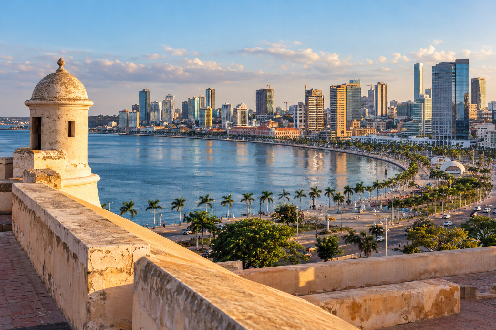
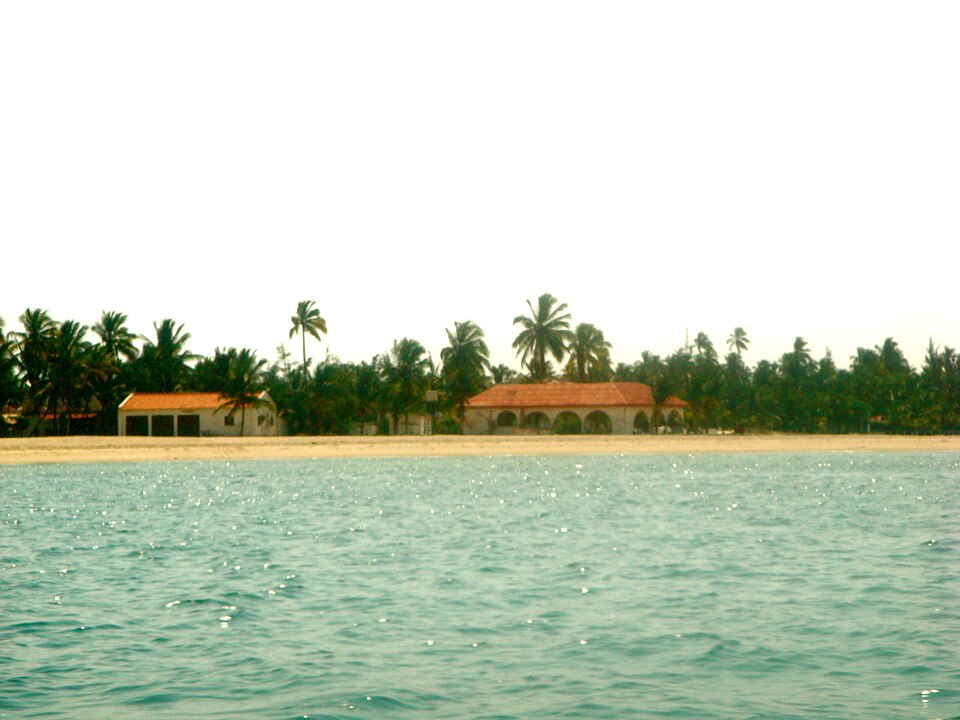
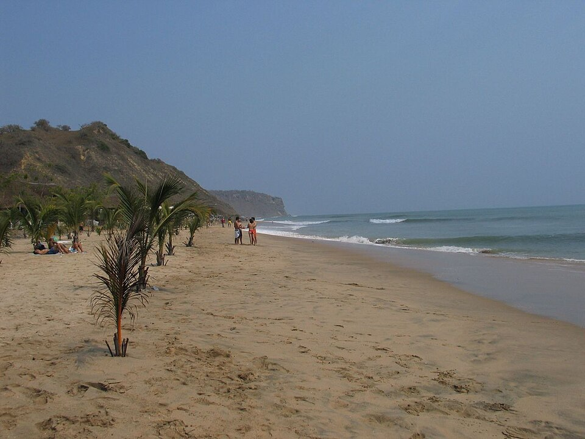
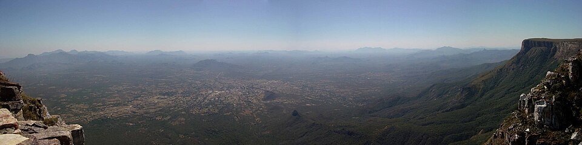
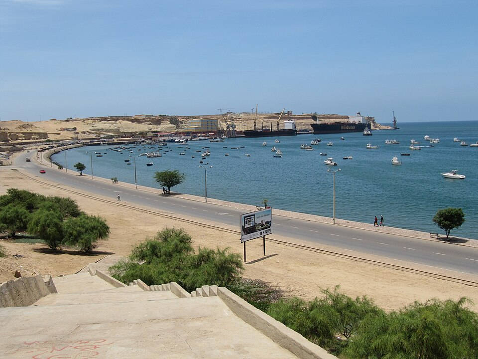
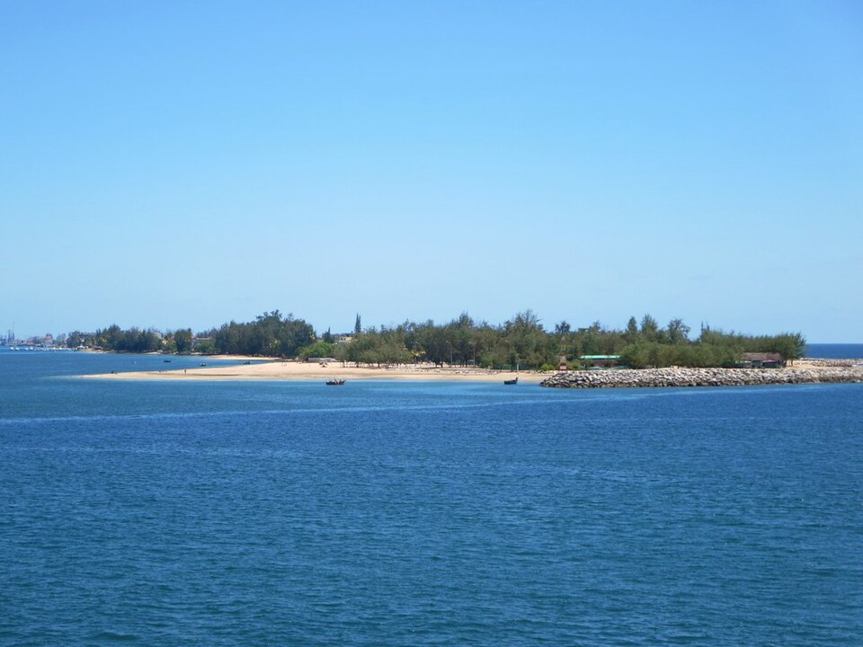

LIS ⟶ NBJ
Luanda
Entre o Atlântico e a energia da cidade.
MENOS LIMITES. MAIS MUNDO.
A próxima aventura começa com uma boa escolha.
Descobre destinos, compara voos e faz as malas.
Pesquisa a tua viagem e, nos resultados do KAYAK, inicia sessão e ativa “Segue os preços” ou “Acompanha os preços”.
O KAYAK acompanha os preços e envia as notificações. O alerta é criado e gerido nesse serviço externo; não fica ativo só por pesquisares aqui.

Fortaleza de São Miguel e Baía de Luanda
Imagem ilustrativa gerada por IA. A pesquisa de voos abre um serviço externo.Também podes pesquisar diretamente: Google Flights ↗ · Skyscanner ↗
UM BILHETE. TANTAS POSSIBILIDADES.
Ideias para sair da rotina.
O destino é teu. A inspiração é nossa.
Entre o Atlântico e a energia da cidade.
Um café, uma caminhada, outra perspetiva.
Mar, montanha e dias com outro ritmo.
Areia nos pés. O Atlântico à tua frente.
Palácio de Schönbrunn: história e jardins imperiais.
Big Ben e Westminster, nas margens do Tamisa.
Imagens ilustrativas geradas por IA. Preços e disponibilidade nos serviços externos.
LUANDA · DESCANSA MELHOR, ESCOLHE COM CALMA
Hostel, guesthouse ou hotel: compara conforme a tua viagem.
Av. Hoji ya Henda · Luanda
Uma opção a consultar se procuras cama em dormitório ou quarto privado. A ficha do alojamento também indica cozinha partilhada.
Antes de reservarConfirma se o valor é por cama ou por quarto e qual a casa de banho incluída.
Consultar na Booking.com Fonte: ficha do alojamento na Booking.comRua Kwamme N'krumah, n.º 1 · Luanda
Alternativa com quartos individuais e duplos. O site oficial permite pedir disponibilidade e indica refeições e transfer mediante pedido.
Antes de reservarPede o valor total e confirma os custos das refeições e do transfer.
Consultar site oficial Fonte: perguntas frequentes do site oficialRua Francisco de Sá de Miranda, n.º 50 · Luanda
Hotel de gestão familiar, com 25 quartos segundo o site oficial. Uma alternativa para comparar se preferes ficar num hotel.
Antes de reservarCompara a tarifa para as tuas datas com a guesthouse e o hostel, incluindo taxas e extras.
Consultar site oficial Fonte: apresentação e contactos do site oficialVerifica taxas, pequeno-almoço, cancelamento e transporte desde o aeroporto NBJ. Um quarto mais barato pode compensar menos se as deslocações forem mais caras.
Consulta o mapa e avaliações recentes. Se chegares tarde, combina a receção e o transporte com o alojamento antes de partir.
Informação consultada em . Não são apresentados preços porque variam com datas, ocupação e condições. Estas são ideias para comparar, sem garantia de menor preço ou avaliação presencial. Ligações externas sem comissão de afiliado.
MAIS PERTO DAS NOSSAS MARAVILHAS
Praias, montanhas e natureza. Escolhe uma região e explora os locais.

Luanda
Reserva tempo para descansar junto ao mar e combinar um passeio de barco.
Ver no mapaUma paragem para descobrir a história e contemplar a baía.
Ver no mapaPasseia junto à baía e conhece outro ritmo da cidade.
Ver no mapa
Cabo Ledo
Uma ideia para sair de Luanda e dedicar um dia à praia e à paisagem costeira.
Ver no mapa
Lubango
Contempla as escarpas e a paisagem a partir dos locais de observação.
Ver no mapaDescobre a estrada de curvas e os miradouros na ligação entre a Huíla e o Namibe.
Ver no mapa
Namibe
Explora as paisagens áridas com acompanhamento local e transporte adequado.
Ver no mapaConhece a cidade e inclui um passeio pela frente marítima.
Ver no mapa
Benguela · Lobito
Descobre esta faixa costeira do Lobito, na província de Benguela.
Ver no mapaAcrescenta ao roteiro um passeio pela cidade e pela sua frente marítima.
Ver no mapaMalanje
Uma paragem para apreciar a paisagem das quedas de água.
Ver no mapaDescobre as formações rochosas e procura acompanhamento local para explorar.
Ver no mapaO TEU ROTEIRO, AO TEU RITMO
Estas ideias não formam um percurso de um só dia. Combina transportes e acompanhamento local, confirma acessos e horários e respeita a sinalização nas praias e nos miradouros.
Na Restinga, confirma as zonas autorizadas para banhos. Foi divulgado um aviso de interdição na zona da Maré Alta para a época balnear 2026/2027; confirma a situação atual localmente. Consultar aviso ↗
Fotografias reais, apresentadas com recorte para o cartão.
Informação consultada em 3 de novembro de 2026. Os mapas são pesquisas externas de localização; confirma o ponto exato e as condições locais antes de viajar.
Turismo do Namibe ↗ · Serra da Leba ↗ · Turismo em Angola — CIPRA ↗Compara a viagem completa. Um preço de partida não conta toda a história.
Compara dias próximos da partida e do regresso. Experimenta outras datas e vê o que funciona para ti.
Vê se a tarifa inclui apenas um artigo pessoal, uma mala de cabine ou também bagagem de porão. Confirma dimensões, peso e custo dos extras no fornecedor.
Revê a duração total, os aeroportos e o tempo de ligação. Se os bilhetes forem separados, confirma quem assume a ligação e se precisas de recolher e voltar a entregar a bagagem.
Usa as mesmas datas, passageiros e bagagem ao comparar. Antes de pagar, verifica o total, a moeda, os extras e as regras de alteração e cancelamento.
Somos a equipa VOA & POUPA. Juntamos inspiração, dicas e pesquisa externa de voos para tornar o planeamento mais simples, com especial atenção à ligação entre Portugal e Angola.
Conhece o nosso compromisso de transparência →Identificamos sugestões, fontes e serviços disponíveis.
Tu comparas e escolhes o fornecedor onde reservar.
As tuas sugestões ajudam-nos a melhorar o projeto.
A VOA & POUPA é um projeto informativo. Não apresenta preços em tempo real, não vende bilhetes e não recebe pagamentos. A pesquisa continua no KAYAK; a reserva é feita com o fornecedor que escolheres. Confirma sempre disponibilidade, preço final e condições antes de pagar.
Esta versão não inclui códigos de afiliado nos links. Poderemos aderir a programas de afiliados no futuro e receber uma comissão por reservas elegíveis. Quando isso acontecer, identificaremos as ligações comerciais e explicaremos a relação com o parceiro.
Este ficheiro não guarda os teus critérios nem inclui ferramentas de análise ou formulários de inscrição. Ao continuar, os aeroportos, datas, passageiros e idades necessárias dos menores são enviados ao comparador através do endereço da pesquisa, que pode ficar no histórico do navegador. Nos sites externos aplicam-se as respetivas políticas de privacidade e cookies.
ESTAMOS À DISTÂNCIA DE UMA MENSAGEM
Conseguiste pesquisar a tua viagem? Conta-nos o que foi fácil e o que podemos melhorar, ou partilha o site.
O email abre a tua aplicação de correio. O WhatsApp abre um serviço externo; a mensagem só é enviada quando a confirmares. Para alterações, reembolsos ou apoio sobre uma reserva, contacta o fornecedor onde compraste. Não envies palavras-passe nem dados de pagamento.